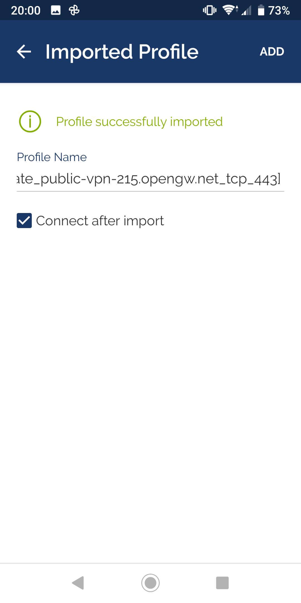

Bước 1: Truy cập vào đây, bấm vào Download via QooApp
Bước 2: Một file .apk sẽ được tải, mở và cài đặt file đó
Bước 3: Mở app có tên QooApp vừa được cài, bấm vào biểu tượng Google/Facebook để đăng ký hoặc đăng nhập
Bước 4: Sau khi đăng nhập màn hình sẽ hiển thị như sau, bấm vào nút Download để tải game
Bước 5: Khi game tải xong bạn bấm vào Cài đặt để cài game
Bước 1: Truy cập vào đây để và làm theo hướng dẫn để chuyển vùng sang Nhật Bản
Bước 2: Bấm vào đây để tải game
Bước 6: Tải app OpenVPN tại đây:
Android
iOS(iPadOS)
Bước 7: Vào đây chọn một VPN Nhật Bản bất kỳ có ping càng thấp càng tốt rồi bấm vào OpenVPN Config file tiếp tục bấm vào OpenVPN Configuration File, một file .ovpn sẽ được tải xuống
Bước 8: Mở file .ovpn vừa tải xuống lên sau đó bấm OK
Bước 9: Tích vào Connect after import sau đó bấm add, chờ app báo Connected thì mở game và tận hưởng :))
